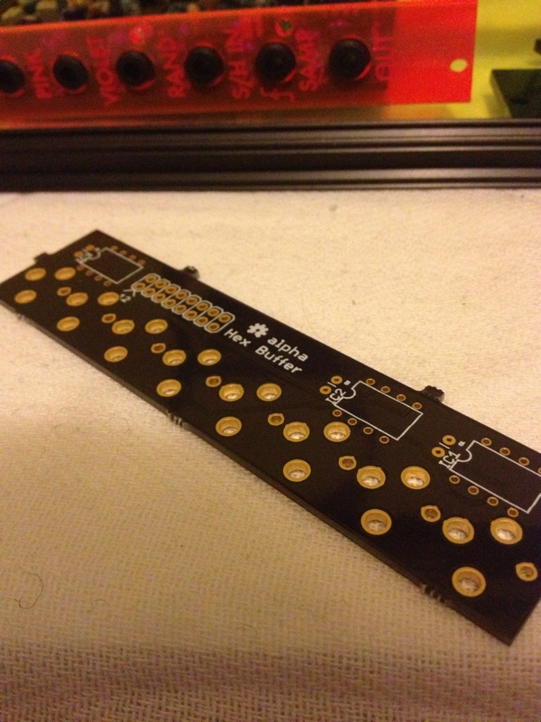
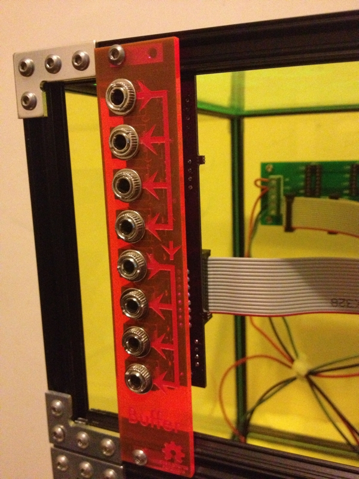

Project Log: Eurorack Buffered Multiple
January 27, 2013
I finally finished my first-ever DIY eurorack synthesizer module - the ever-humble buffered multiple.
I finally finished my first-ever DIY eurorack synthesizer module - the ever-humble buffered multiple.
Modular synthesizers are musical instruments made out of removable, replacable building blocks. Each module in a synth is able to interact with all the others to create unique sonic landscapes. While precise, engineered sounds are possible, the tactile physical nature of the system tends to encourage organic, creative exploration of the rich parameter space.
I've been interested in designing modules for this ecosystem for a long time, and now I've finally found a comfortable design and fabrication stack for it. As a proof of concept, I've created a very simple type of module called a buffered multiple.
A multiple is just a signal splitter, allowing the user to connect one output into multiple inputs of other modules.
The electronics of a multiple are quite simple, really just consisting of a single op amp stage per output. There are two inputs, each providing three buffered clones of the input signal. If there is no jack plugged into the second input, all the outputs follow the first input signal.
For the board layout I used EAGLE, which is free for non-commercial use and does the job. The learning curve was quite difficult, and I probably wouldn't have been able to use it without the support of some experienced friends. While there are other electronic CAD choices out there, none are nearly as ubiquitous for hobbiests.
All of the design files for the project, including a list of all parts required, are on GitHub under a permissive license.

The board was fabricated by OSH Park, which was quite affordable at $6 per board. A nice feature of OSH Park is that they support EAGLE files, so no export to the more-standard gerber files is needed.
I hand assembled the boards with parts from mouser.

The panel was lasercut out of acrylic from Inventables at a local lasercutting shop. The design files were done in InkScape.